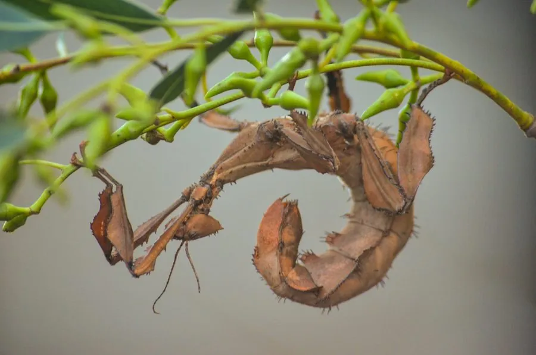

昆虫 · 动物界
幽灵竹节虫 Extatosoma tiaratum

澳大利亚雨林中的大型竹节虫，外形酷似枯叶或带刺的树枝，雌虫无翅、雄虫会飞，受惊时摆出蝎子般的防御姿态。
- 分类
- 门节肢动物门纲昆虫纲目竹节虫目科竹节虫科属幽灵竹节虫属
- 栖息环境
- 澳大利亚东北部的热带雨林，栖息于桉树等树木枝叶间
- 地理分布
- 澳大利亚东北部昆士兰州的热带雨林
- 保护级别
- 暂无评估
物种志
幽灵竹节虫成虫体长 10–15 cm，雌虫明显大于雄虫。它的身体和足上布满棘刺，体色为褐黄或绿色，腹部宽阔并卷曲，形似枯叶；雌虫翅膀退化无法飞行，雄虫体形细长、有翅，能飞行寻找配偶。
幽灵竹节虫分布于澳大利亚东北部的热带雨林，栖息于桉树等树木的枝叶间，是典型的夜行性植食昆虫。它以桉树、蔷薇科等植物叶片为食，白天静止在枝叶间，靠外形拟态躲避天敌；受惊时会高举腹部、摆出蝎子般的姿势，并可能从胸部腺体释放气味。雌虫能孤雌生殖，未经交配也可产卵；卵被弹落到地面，外形像种子，常被蚂蚁搬运到巢中，孵化后若虫爬出。幽灵竹节虫是受欢迎的宠物昆虫，野外种群受雨林保护状况影响。
形态与习性
- 食性桉树、蔷薇科等植物叶片
- 体长成虫 10–15 cm，雌虫大于雄虫
- 拟态外形酷似枯叶或带刺树枝
- 防御受惊时高举腹部摆出蝎子般的姿势
- 繁殖雌虫可孤雌生殖，卵形似种子
- 活动节律夜行性，白天静止在枝叶间
趣味知识
- 幽灵竹节虫受惊时会高举腹部，摆出蝎子般的姿势。
- 雌虫无须交配也能产卵，属于孤雌生殖。
- 它的卵外形像种子，常被蚂蚁搬进巢中。
- 雌虫无翅不会飞，雄虫却有翅能飞行寻找配偶。